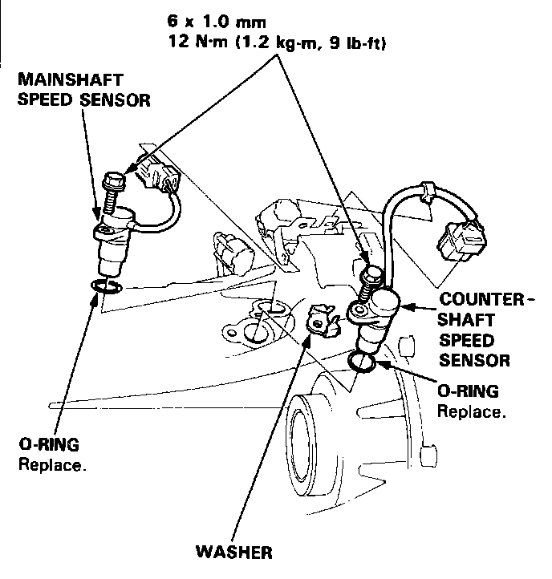

Operation CHARM
: Car repair manuals for everyone.
Home
>>
Acura
>>
1993
>>
Legend Sedan V6-3206cc 3.2L SOHC FI
>>
Repair and Diagnosis
>>
Sensors and Switches
>>
Sensors and Switches - Powertrain Management
>>
Sensors and Switches - Computers and Control Systems
>>
Vehicle Speed Sensor
>>
Locations
Vehicle Speed Sensor: Locations
Vehicle Speed Sensor (VSS):

The Vehicle Speed Sensor
(VSS)
is located on the differential housing, near to the oil filter. It is part of the Power Steering
(P/S)
speed sensor assembly.